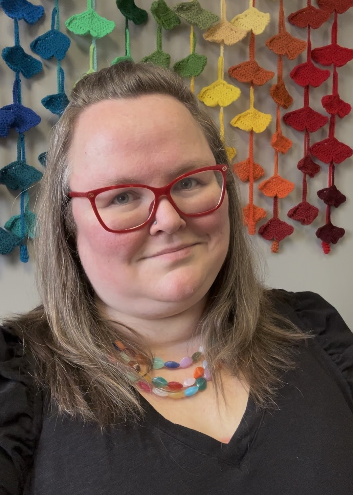

Neurodiversity & Queer-Affirming Therapy
I want to learn your voice, your language, and help you amplify it.
Learn More Request a Consultation
Hi, I'm Elaine.
I know how discouraging navigating mental health can be! Have you ever been told to not overthink things? Or that you intellectualize too much? Instead of framing those as barriers, I create space for engaging that thinking and leveraging it towards what you value. I want to learn your voice, your language, and help you amplify it.
My central commitment is to the LGBTQIA2S+ community. I specialize with intersections of queer and neurodiverse (autism, ADHD, etc.) identities. I also enjoy working with individuals on stress related to higher education (college, grad school). I help clients think through: anxiety and/or depression; clarifying/questioning identities such as gender and/or sexuality; academic stress (including graduate work!); navigating transitions; healing from religious trauma; and more.
In addition to a Masters of Social Work, I have a PhD in Philosophy with a focus on gender, queer theory, and trans theory. This means that I have a lot of conceptual tools at your disposal for engaging questions of identity, intersectionality, and how to negotiate conflicting social expectations and demands.
In my free time, I like to play board games (especially cooperative ones!), do crossword puzzles, and crochet.
What would sessions with me be like?
I find questioning with curiosity helpful in gaining deeper understanding into the meaning and reasoning behind our thoughts. Otherwise, I like to tailor my treatment approach to what you find edifying and practicable! I eclectically meld parts work, narrative therapy, queer/trans theory, feminist theory, and more. My goal is to be a resource for you, to help you celebrate the strengths and tools already within you, and to form a collaborative relationship to build upon them with you. I want to help you build confidence in your own voice! Bring all of you!
Ready to see if we're a good fit?
Fill out this short form, and I'll reach out within 48 business hours to schedule your free consultation!